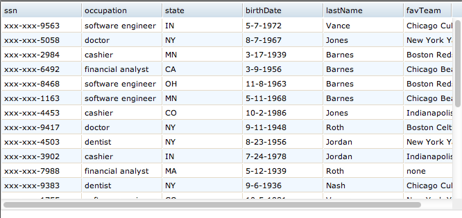
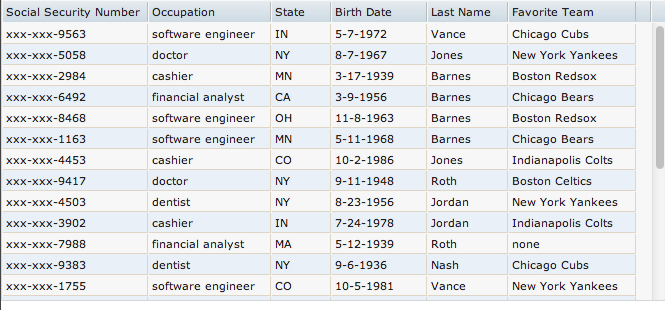

Widget Palette Dojo GridX Tests (Column Editing)
Data file from workspace
Steps
- Choose New HTML File from the New menu
- Open the Dojo Controls folder in the Widget palette.
- Drag GridX widget onto the canvas.
- SmartInput is displayed. Choose Data file from workspace from the drop down list on the first panel of the wizard.
- Click on the folder icon.
- The select a source dialog will be displayed, navigate to the samples/sample_data folder and then select the sampleManyColumns.json file. Click the OK button
- The text area should now display the text samples/sample_data/sampleManyColumns.json. Unlike DataGrid, radio buttons to specify plain text or HTML markup should not
be displayed.
- Click the Finish button on the wizard.
- The GridX should be updated with the data from the sampleManyColumns.json file. It should also have a width of 100%.
- Save and close the file.
- Reopen the file
- Click on the preview icon in the toolbar, this should open a new browser window and the grid should be displayed with the data from the file.
Expected results
- The GridX in page editor and preview should be displaying the data from the file. NOTE: It's expected to be basically unreadable because the dataset contains roughly 19 columns.

Select Columns
Steps
- Continuing from the test case above.
- Double click on the GridX Widget in the design view to display the smart input.
- SmartInput is displayed. The first panel should still have Data file from workspace selected and samples/sample_data/sampleManyColumns.json in the text field.
- Click Next to go to the 2nd panel of the wizard for column selection.
- You should see a "slosh bucket" with a multi-select list on the left for Available columns and another multi-select list on the right for Available columns.
In this case, the Available columns list should be empty and the Available columns list should contain all of the columns (roughly 19 of them).
- Our goal is to pick some subset of columns (e.g., lastName, state, ssn, birthDate) for display in the table. Move all of the rest of them to the Available columns side. You should be able to
move columns to the other side either by:
- Selecting and then clicking the button with the arrow pointing to the left.
- Double-clicking on them.
- Move a couple of columns (say favTeam and occupation) from the available side to the selected side either by:
- Selecting and then clicking the button with the arrow pointing to the right.
- Double-clicking on them.
- Change the order of the selected columns (say to ssn, birthDate, state, occupation , lastName, and favTeam). You can use the button with the up arrow to move columns up the list and the button with the down arrow to move columns down the list.
- Click the Finish button on the wizard.
- The GridX should be updated to show your selected columns in the specified order.
- Save and close the file.
- Reopen the file
- Click on the preview icon in the toolbar, this should open a new browser window and the grid should be displayed with the data from the file.
Expected results
- The GridX in page editor and preview should be displaying your selected columns in the specified order.

Labeling and Resizing Columns
Steps
- Continuing from the test case above.
- Double click on the GridX Widget in the design view to display the smart input.
- SmartInput is displayed. The first panel should still have Data file from workspace selected and samples/sample_data/sampleManyColumns.json in the text field.
- Click Next to go to the 2nd panel of the wizard for column selection. The list on the right for selected columns should show the columns you previously selected in the order you
placed them. All of the rest of the columns should be in the available list on the left side.
- Click Next to go to the 3rd panel. You should see:
- a preview table that looks like your table in the page editor (e.g., your previously selected columns in the previously selected order)
- a column properties "palette" with all fields disabled (since no columns are selected)
- Resize all of the columns so there is no wrapping. You can resize columns by dragging the column header border. As you resize columns note:
- after a column is resized, it is selected
- after a column is selected, you should see the column properties palette populated
- if you resize the column again, the width value in the palette should be updated as well
- Change all of the column headers from ids to human readable values (e.g., ssn to Social Security Number, etc.).
- You can change a column header by selecting the column and changing the label value in the column properties palette. When focus leaves the label text
field, the column header in the preview should be updated immediately.
- As you change column headers, resize the columns so that the headers don't wrap. You can do this by dragging column headers (as you did previously) or by
entering values in the Width field for a selected column. Be sure to try both approaches.
- Click the Finish button on the wizard.
- The GridX should be updated to show new column labels and widths.
- Save and close the file.
- Reopen the file
- Click on the preview icon in the toolbar, this should open a new browser window and the grid should be displayed with the data from the service.
Expected results
- The GridX in page editor and preview should be displaying your columns with new sizes and labels.
